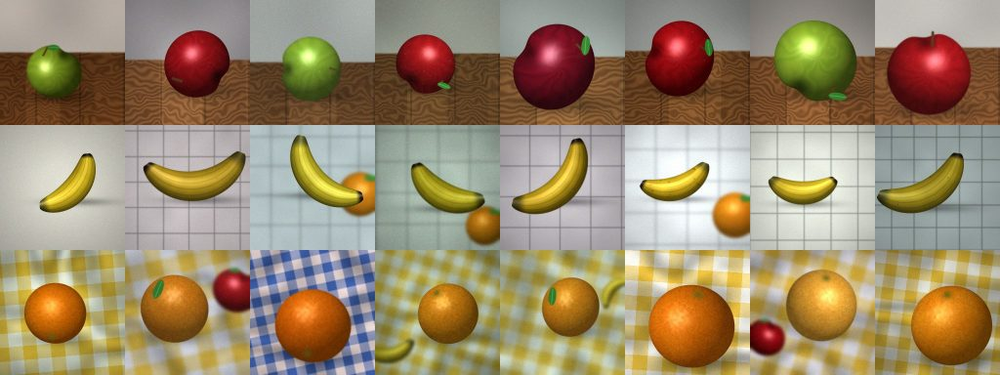
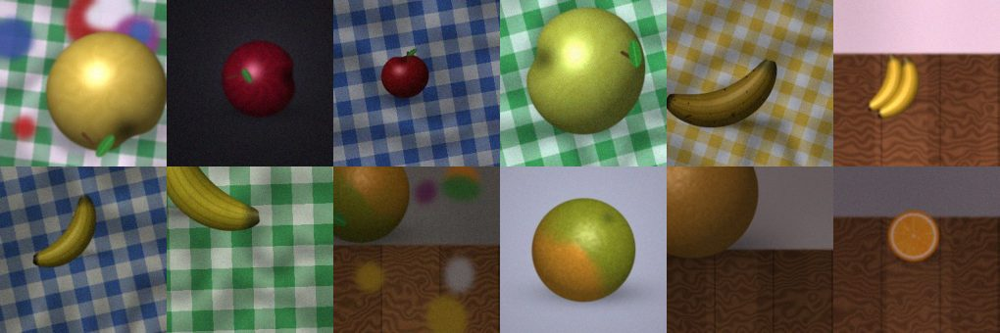
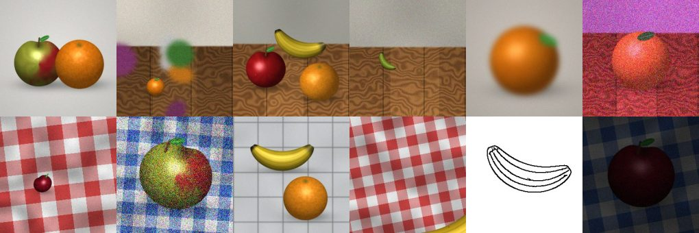
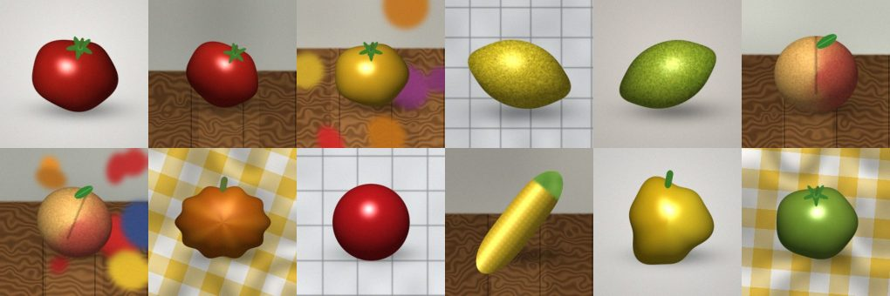
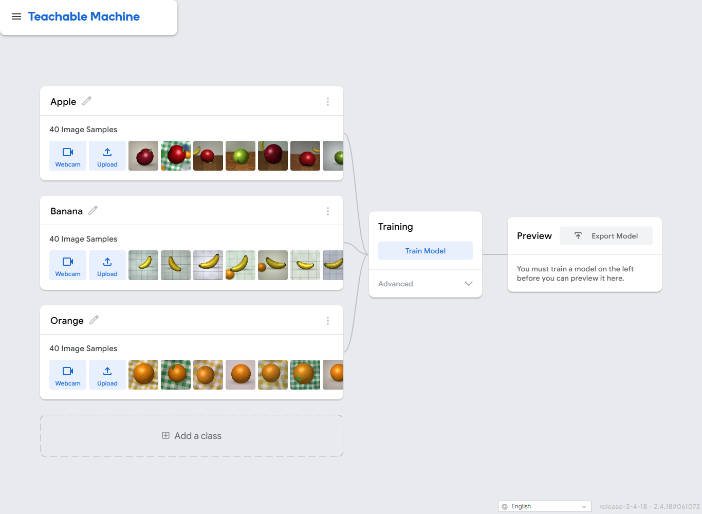
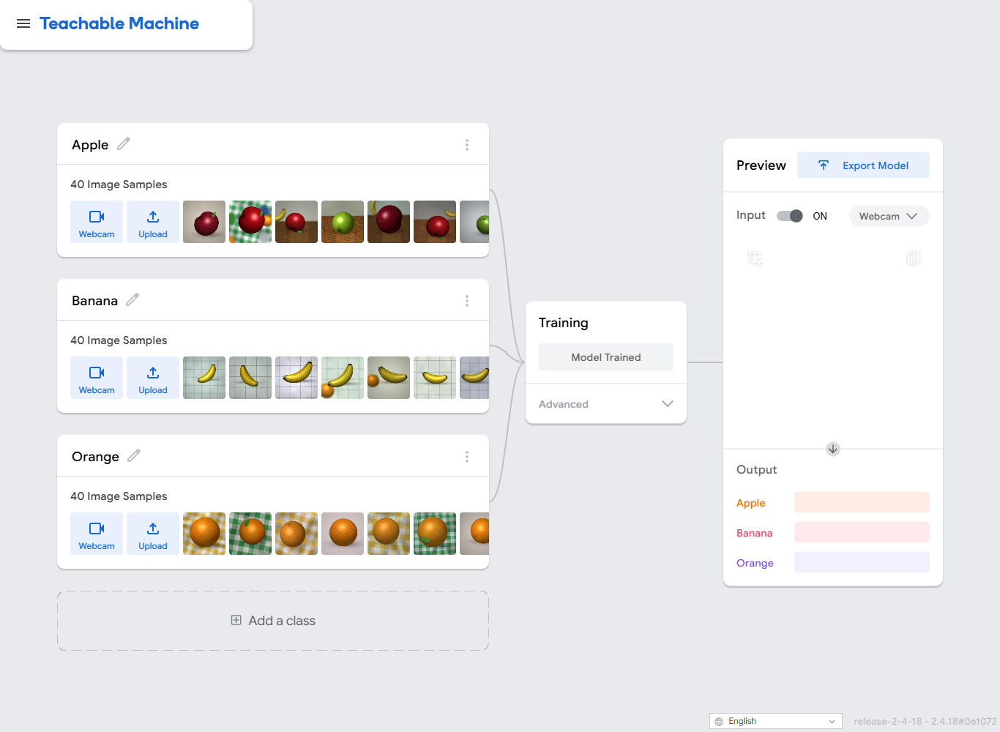
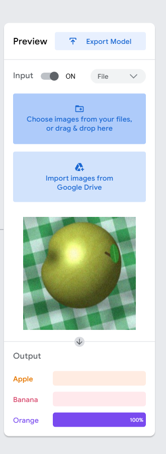
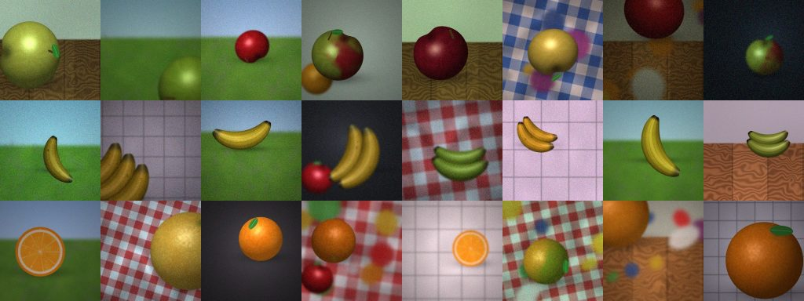
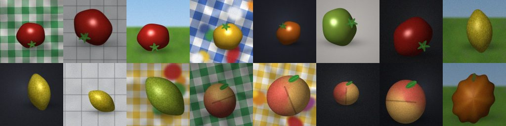

🎬 شاهد الفيديو أولًا
فيديو صامت بنصوص على الشاشة يشرح المرحلة كلها خطوة بخطوة. يمكنك الإيقاف والرجوع أو الانتقال إلى فصل:
🚀 مهمتك: اجمع 5 نجوم
أجب عن الاختبارات السريعة في الدليل. كل إجابة صحيحة تُضيء نجمة.
ما الجديد هذه المرة؟
- الصور من الحياة الحقيقية الفوضوية: طاولات مختلفة، إضاءة خافتة، فاكهة صغيرة جدًا، فاكهة مقطوعة من أطراف الصورة، وحتى رسم بالقلم الرصاص.
- سيبدو ذكاؤك الاصطناعي رائعًا أثناء التدريب. ثم يواجه اختبار الزعيم.
- ستلعب دور المحقق: لماذا يفشل الذكاء الاصطناعي في بعض الصور؟
- ثم تصلح الأمر بـ حزمة الإصلاح وتدرّب من جديد (الجولة 2). هل تحسّن؟
قبل أن تبدأ
- حاسوب متصل بالإنترنت. افتح
https://teachablemachine.withgoogle.com/في Chrome. - فُكّ ضغط حزمة الطلاب. لا تفتح ملفات المعلم.
- ضع ورقة النتائج بجانبك (الملف RESULTS_SHEET_AR.txt) — ستستخدم أرقامك مرة أخرى في المرحلة 2 (Excel).
0المهمة▶ شاهد هذا الجزء 0:07
في المرة السابقة كانت صور الاختبار سهلة. هذه المرة كل صورة فخ صغير. على الذكاء الاصطناعي أن يتعلم من 120 صورة تدريب ثم يواجه ثلاث مجموعات من صور الاختبار لم يرها من قبل.
1_TRAIN | 120 صورة لتعليم الذكاء الاصطناعي: تفاح، موز، برتقال (40 لكل نوع) |
2_BOSS_TEST_12 | 12 صورة من اختبار الزعيم. اسم الملف يخبرك بالفاكهة الحقيقية (apple_b01 …). |
3_NIGHTMARE_12 | 12 صورة صعبة جدًا. اسم الملف لا يخبرك بالإجابة. |
4_TRAPS_12 | 12 صورة ليست تفاحًا ولا موزًا ولا برتقالًا. لا شيء يخبرك بالإجابة — انظر إليها بنفسك. |




1افتح Teachable Machine وأنشئ 3 فئات▶ شاهد هذا الجزء 0:53
- اذهب إلى
teachablemachine.withgoogle.com← Get Started ← Image Project ← Standard image model. - اضغط على القلم بجانب Class 1 واكتب
Apple. غيّر اسم Class 2 إلىBanana. اضغط Add a class وسمّهاOrange. - في فئة Apple اضغط Upload ← Choose images from your files. افتح المجلد
1_TRAIN/Appleواضغط Ctrl+A ثم افتح. انتظر حتى تظهر 40 Image Samples. - افعل الشيء نفسه لفئة Banana (المجلد
1_TRAIN/Banana) ولفئة Orange (المجلد1_TRAIN/Orange).

2درّب — وضع توقعًا أولًا▶ شاهد هذا الجزء 0:53
- قبل الضغط على الزر اكتب تخمينك في ورقة النتائج: كم صورة من صور الزعيم الـ 12 سيجيب عنها الذكاء الاصطناعي صحيحًا؟
- اضغط Train Model. أبقِ التبويب مفتوحًا حتى ترى Model Trained (دقيقة إلى دقيقتين).

لماذا لا ندرّب على صور اختبار الزعيم؟
3اختبار الزعيم: 12 صورة▶ شاهد هذا الجزء 1:27
- في مربع Preview غيّر Input من Webcam إلى File.
- اضغط Choose images from your files وافتح أول صورة من
2_BOSS_TEST_12. - انظر إلى الأشرطة الثلاثة. اكتب النسب المئوية الثلاث في ورقة النتائج واكتب إجابة الذكاء الاصطناعي (الشريط الأكبر).
- كرّر ذلك لكل الصور الـ 12. عدّ كم صورة أجاب عنها الذكاء الاصطناعي صحيحًا.

يعرض الذكاء الاصطناعي «برتقال 95%» لصورة. ماذا تعني 95%؟
4الإنسان ضد الذكاء الاصطناعي: صور الكابوس▶ شاهد هذا الجزء 1:57
- افتح المجلد
3_NIGHTMARE_12. لكل صورة اكتب إجابتك أنت أولًا: تفاح أو موز أو برتقال أو مختلط (أكثر من فاكهة). - ثم اختبر الصورة في Teachable Machine واكتب إجابة الذكاء الاصطناعي وأكبر نسبة مئوية.
- النقاط: تحصل على نقطة لكل صورة أجبت عنها صحيحًا. والذكاء الاصطناعي يحصل على نقطة لكل صورة أجاب عنها صحيحًا. من يفوز؟
5صور الفخاخ▶ شاهد هذا الجزء 1:57
الصور في 4_TRAPS_12 هي طماطم وليمون وخوخ وقرع وكرة… هذه ليست تفاحًا ولا موزًا ولا برتقالًا.
- اختبر 6 صور فخ على الأقل. اكتب إجابة الذكاء الاصطناعي وأكبر نسبة مئوية.
- سؤال: ما مدى تأكد الذكاء الاصطناعي؟ هل كان غير متأكد في أي مرة؟
عُرضت طماطم على ذكاء اصطناعي تفاح/موز/برتقال. ماذا عليه أن يفعل؟
6وقت المحقق▶ شاهد هذا الجزء 2:20
انظر إلى الصور التي أخطأ فيها الذكاء الاصطناعي. ما المشترك بينها؟ ضع علامة على كل دليل ينطبق:
- ☐ الفاكهة على طاولة أو قماش مختلف عمّا في صور التدريب.
- ☐ الصورة معتمة.
- ☐ الفاكهة صغيرة جدًا.
- ☐ الفاكهة مقطوعة بحافة الصورة.
- ☐ نوع من الفاكهة نادرًا ما رأيته في التدريب (موز أخضر، برتقالة مقطوعة نصفين، تفاحة صفراء …).
- ☐ يوجد شيء آخر في الصورة (فاكهة أخرى، بقع ساطعة خلفها).
يفشل الذكاء الاصطناعي مع فاكهة على طاولات غير مألوفة. ما أفضل إصلاح؟
7الجولة 2: حزمة الإصلاح▶ شاهد هذا الجزء 2:35
- اطلب من معلمك حزمة الإصلاح (ملف ZIP). فُكّ ضغطه.
- في Teachable Machine ارفع صور
FIX/Appleإلى فئة Apple وصورFIX/Bananaإلى Banana وصورFIX/Orangeإلى Orange (20 صورة إضافية لكل فئة). - اضغط Train Model من جديد. اختبر صور الزعيم الـ 12 نفسها مرة أخرى واكتب الأرقام الجديدة في أعمدة الجولة 2.
- قارن الجولة 1 بالجولة 2. كم صورة أصبحت صحيحة أكثر؟

بعد حزمة الإصلاح ارتفعت النتيجة. أي الصور ساعدت؟
8إضافة: فئة رابعة اسمها Other▶ شاهد هذا الجزء 2:35
هل نستطيع أن نعلّم الذكاء الاصطناعي أن يقول «هذه ليست أيًّا من الثلاث»؟
- اضغط Add a class وسمّها
Other. - ارفع الصور الـ 24 من المجلد
OTHER_PACK/Other(طماطم، ليمون، كرات …). - درّب من جديد واختبر صور الفخاخ الـ 12. كم صورة تُسمّى Other الآن؟

9فكّر في الأمر
- لماذا بدا الذكاء الاصطناعي مثاليًا أثناء التدريب لكنه فشل في بعض صور الزعيم؟
- ما نوع الصور الأصعب على ذكائك الاصطناعي؟ ولماذا تظن ذلك؟
- من فاز في جولة الكابوس: أنت أم الذكاء الاصطناعي؟ ماذا يخبرك ذلك؟
- ماذا غيّرت حزمة الإصلاح؟ هل هي كافية؟ ماذا تضيف أيضًا؟
- هل تثق بهذا الذكاء الاصطناعي ليفرز الفاكهة في متجر؟ ما الذي قد يسوء؟
المحطة التالية: خذ أرقام الجولة 1 والجولة 2 إلى Excel في المرحلة 2.
⭐ تحدّي الزعيم
- اوصل إلى 10 من 12 في اختبار الزعيم في الجولة 2.
- احصل على نقاط أكثر من الذكاء الاصطناعي في جولة الكابوس.
- ابحث عن صورة يكون فيها الذكاء الاصطناعي متأكدًا بأكثر من 90% ومخطئًا. اعرضها على الصف.
كلمات يجب معرفتها
| English | العربية | עברית |
|---|---|---|
| training pictures | صور التدريب | תמונות אימון |
| test pictures | صور الاختبار | תמונות מבחן |
| class | فئة | מחלקה |
| accuracy | الدقة | דיוק |
| confidence | الثقة | ביטחון |
| shortcut | اختصار (طريقة غير مقصودة للتعلّم) | קיצור דרך |
| bias | انحياز | הטיה |
| Fix Pack | حزمة الإصلاح | חבילת תיקון |
| trap picture | صورة فخ | תמונת מלכודת |
أسئلة
يقول إن العينات قليلة.
تحتاج Teachable Machine إلى بضع صور على الأقل في كل فئة. تأكد أن كل فئة تعرض 40 Image Samples.
أرقامي مختلفة عن أرقام صديقي.
هذا طبيعي. في التدريب بعض العشوائية، لذلك قد يحصل طالبان على نتائج مختلفة قليلًا. قارن الأنماط وليس الأرقام بالضبط.
هل أحتاج إلى حساب Google؟
لا. لا تضغط Save to Drive. تعمل Teachable Machine داخل المتصفح.
أجاب الذكاء الاصطناعي عن كل شيء صحيحًا في الجولة 1.
تأكد أنك استخدمت مجلد اختبار الزعيم وليس مجلد التدريب. إن كان كذلك أخبر معلمك — وجرّب صور الكابوس والفخاخ.